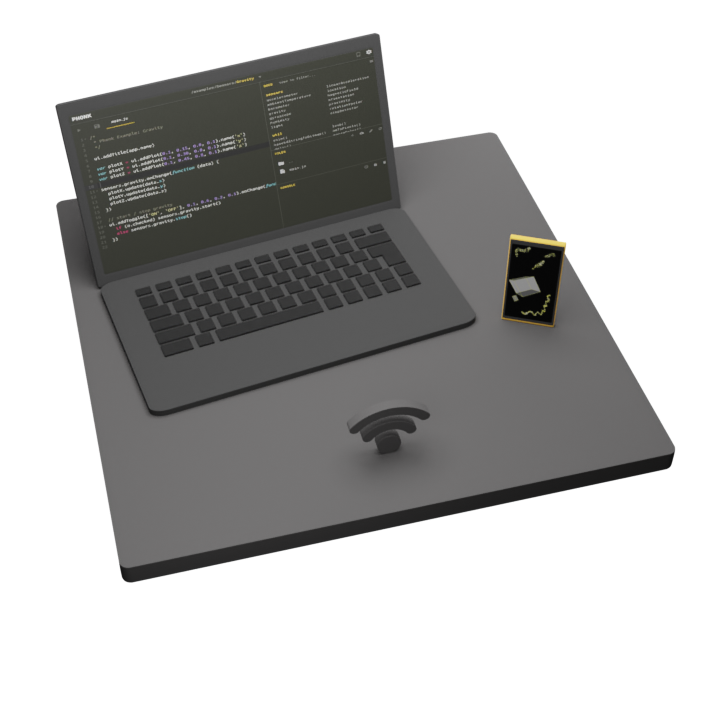

Phonk app
Self-contained Creative scripting toolbox for new and old Android devices
Website: phonk.app
Self-contained Creative scripting toolbox for new and old Android devices
Website: phonk.app

Samarth presented optical illusions he has animated.
See samarthishere
They are known optical illusions, he interpolated the design to reveal the parts that produce the illusion.
Got to xemantic.com for details.
Check Floating Spectrum for details.